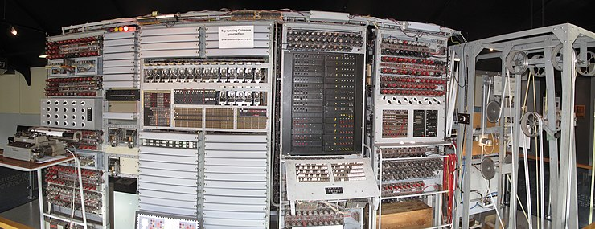

CS Fun Facts
While Computer Science involves complex algorithms, rigorous coding challenges, and extensive testing, it's also packed with surprising trivia, interesting quirks, and unexpected fun facts. Let's dive in and discover the lighter side of the computer science world!
Computer Science Facts
-
 90% of the world's data was created in the last two years. The exponential growth of social media, cloud computing, and the internet of things has led to an explosion of data creation. This fact emphasizes the significance of data science in analyzing and making sense of this vast amount of information.
90% of the world's data was created in the last two years. The exponential growth of social media, cloud computing, and the internet of things has led to an explosion of data creation. This fact emphasizes the significance of data science in analyzing and making sense of this vast amount of information.
Source: Forbes -
 The global artificial intelligence (AI) market is expected to reach $126 billion by 2025. The AI market is growing rapidly, with more and more businesses adopting AI technology to improve their operations. For example, the healthcare industry uses AI to improve diagnosis and treatment, while the financial sector uses AI to identify fraud and improve customer service.
The global artificial intelligence (AI) market is expected to reach $126 billion by 2025. The AI market is growing rapidly, with more and more businesses adopting AI technology to improve their operations. For example, the healthcare industry uses AI to improve diagnosis and treatment, while the financial sector uses AI to identify fraud and improve customer service.
Source: Statista -
Cybercrime is expected to cost businesses $10.5 trillion annually by 2025. Cybersecurity is a significant concern for businesses today as cyber-attacks become increasingly sophisticated and frequent. The cost of cybercrime is expected to continue to rise, with companies spending more and more to protect their networks and data.
Source: Cybersecurity Ventures -
Ada Lovelace, a woman, was the world's first computer programmer. Ada Lovelace worked with Charles Babbage to develop the first mechanical computer in the 1800s, making her a pioneering figure in computer science. Her contributions to the field were groundbreaking and paved the way for many of the advancements we see today.
Source: Britannica -
 The world's first electronic computer, the Colossus, was built in 1943. The development of the Colossus was a significant milestone in the history of computer science, as it was the first machine capable of performing complex calculations using electronic components. This fact highlights the evolution of computer science and its impact on the world.
The world's first electronic computer, the Colossus, was built in 1943. The development of the Colossus was a significant milestone in the history of computer science, as it was the first machine capable of performing complex calculations using electronic components. This fact highlights the evolution of computer science and its impact on the world.
Source: Historic England -
The first webcam was invented at the University of Cambridge to monitor the coffee pot in the computer science department. The invention of the webcam has led to a revolution in communication and remote work. This fact shows how even mundane problems can lead to significant advancements in computer science.
Source: BBC -
 The first computer game, "Spacewar!", was invented in 1962. Video games have become a massive industry and form of entertainment. This fact shows how it all began, and also highlights the role of computer science in the entertainment industry.
The first computer game, "Spacewar!", was invented in 1962. Video games have become a massive industry and form of entertainment. This fact shows how it all began, and also highlights the role of computer science in the entertainment industry.
Source: ThoughtCo -
 The first computer, known as the ENIAC, weighed 30 tons and took up an entire room. The ENIAC (Electronic Numerical Integrator and Computer) was built in the 1940s and was a massive breakthrough in computer science. Its size and weight starkly contrast with the small and powerful computers we have today, and it shows just how far technology has advanced in a relatively short amount of time.
The first computer, known as the ENIAC, weighed 30 tons and took up an entire room. The ENIAC (Electronic Numerical Integrator and Computer) was built in the 1940s and was a massive breakthrough in computer science. Its size and weight starkly contrast with the small and powerful computers we have today, and it shows just how far technology has advanced in a relatively short amount of time.
Source: PennToday -
 The first computer network was developed in the late 1960s and was called ARPANET. ARPANET (Advanced Research Projects Agency Network) was developed by the United States Department of Defense as a way for researchers to communicate and share resources. It eventually evolved into the internet we know today, highlighting the tremendous impact computer networks have had on society.
The first computer network was developed in the late 1960s and was called ARPANET. ARPANET (Advanced Research Projects Agency Network) was developed by the United States Department of Defense as a way for researchers to communicate and share resources. It eventually evolved into the internet we know today, highlighting the tremendous impact computer networks have had on society.
Source: History